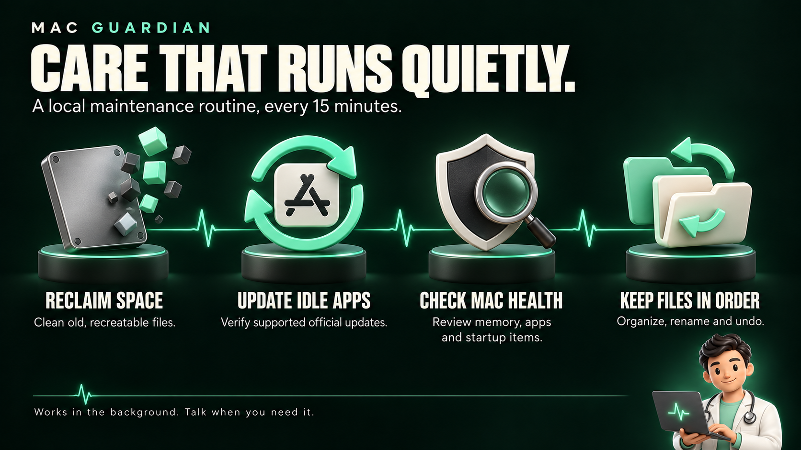
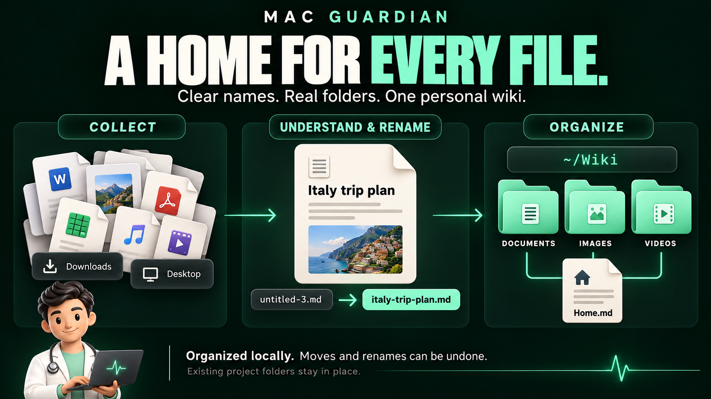
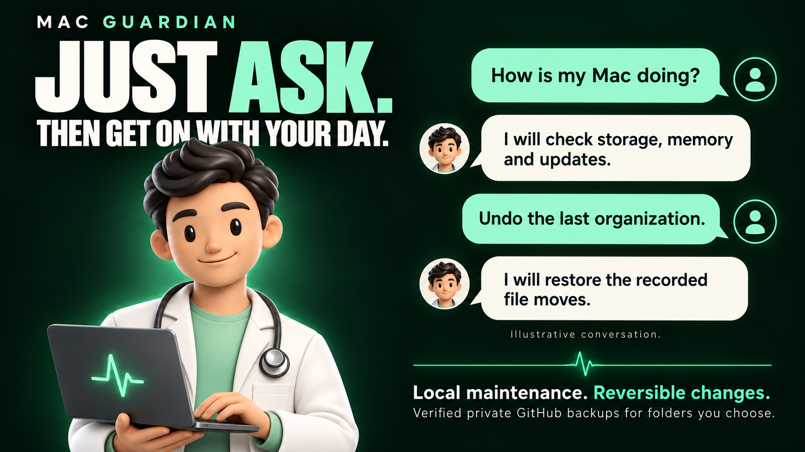

Your Mac has
a doctor now.
Mac Guardian. Automatic care, through conversation.
40 seconds
1920 × 1080
24 fps
Original 144 BPM score
Built in HyperFrames
01 / Brand hero

02 / Quiet automatic maintenance

03 / Personal file wiki

04 / Conversation and control